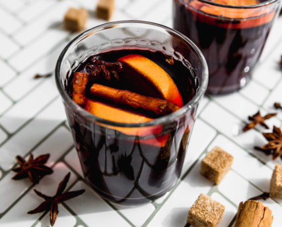

Vino Navegado

El Vino Navegado, se consume principalmente en invierno. Su sabor dulce y especiado, junto a la calidez del vino tinto, lo convierten en una bebida perfecta para esos días fríos.
Ingredientes
- 1 botella de vino tinto
- 2 naranjas cortadas en rodajas finas con cáscara
- 2 ramitas de Canela Entera
- 4 Clavos de Olor
- 1 taza de azúcar
Preparación
- Poner en una olla el vino, las naranjas, la Canela Entera, los Clavos de Olor y el azúcar.
- Poner a calentar a fuego bajo hasta que hierva, siempre revolviendo para mezclar bien el azúcar y para que los ingredientes liberen su aroma. Cuando hierva, acercar un fósforo encendido a la preparación con mucho cuidado para flambear y eliminar el alcohol de la preparación.
- Servir caliente con una o dos rodajas de naranja en cada vaso.